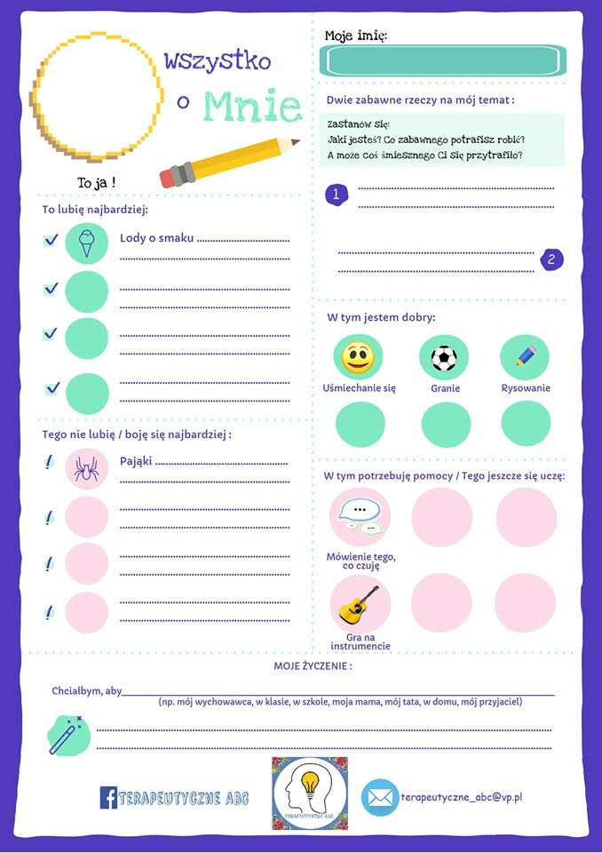

Nauczanie zdalne
Klasa 8A
wychowawca Beata Klimowicz
¦roda 10.06.2020r
JÊZYK POLSKI
Temat: Jak napisaæ dobre opowiadanie? Powtórka
Ogl±dnij i przeczytaj!
https://www.youtube.com/watch?v=8K4RZMA4Pz8
https://www.nowaera.pl/o-nas/programy-edukacyjne/popisz-sie-talentem-2018/10-wskazowek-jak-stworzyc-dobre-opowiadanie
MATEMATYKA
Temat: Symetria wzglêdem punktu- zadania.
Film: Symetria wzglêdem punktu- Matematyka Szko³a Podstawowa.Tomasz Gwiazda YouTube / zadania wpisaæ do zeszytu i wszystkie zapisy, opisy/.
Strona: Obrazy dla symetria wzglêdem punktu- obejrzeæ.
Pozdrawiam p. Zosia.
WYCHOWANIE FIZYCZNE- DZIEWCZYNY
Temat: Trening techniki biegowej
zostañwdomu#trenuj w domu !!!
Przypominam o zasadach bhp podczas æwiczeñ w domu, tak jak na lekcjach w-f w szkole. Proszê równie¿ pamiêtaæ, ¿e æwiczymy tylko i wy³±cznie jak jeste¶my zdrowi.
Pamiêtajmy przed rozpoczêciem æwiczeñ ,aby zrobiæ 10 minutow± rozgrzewkê (æwiczenia pamiêtamy z lekcji).
Dzisiaj nauczymy siê startu wysokiego z ró¿nych pozycji oraz techniki biegu. Proszê æwiczyæ najlepiej na ¶wie¿ym powietrzu. .Powtarzamy æwiczenia z filmiku.
https://youtu.be/hPL_tgjETdM?list=TLPQMDcwNjIwMjADAVlZfp4T4Q
USPRAWNIANIE TECHNIK SZKOLNYCH- MATEMATYKA
Przesy³am zadania do rozwi±zania z rewalidacji. Zadania nale¿y rozwi±zane odes³aæ 12.06.2020- sprawa wa¿na.
1. 1/5 *2/7=
2 1/2* 1 1/2=
1-7/10=
2-1 4/5=
2. -13+5=
-/-10/+8=
-7*/-4/=
5*/-10/=
35:/-7/=
3. 25x+10=5x+30
8z= 16
4. Czy liczba 2 spe³nia równanie: 6x+6= 12
5. 1 kg jab³ek kosztuje 2.50z³ . Ile zap³acimy za 4, 8, 12 kg jab³ek?
6. 3 chleby kosztuj± 15,30 z³. Ile kosztuje 1 chleb?
7. Podaj miarê trzeciego k±ta w trójk±cie , wiedz±c, ¿e :
a/ / 60,60 ........../
b/ / 45,45, ........./
c/ /60,90,........../
d/ / 47, 53, ......../
8. Podaj miarê czwartego k±ta w czworok±cie , wiedz±c ,¿e :
a/ / 60,60,120,............../
b/ / 110,100,80,............/
9. Oblicz a=10 b= 7 c=? / Tw. Pitagorasa /
10. Zaznacz punkty A (1, 2), B( 4, 2), C (1, -2), D ( 4, -2) - uk³ad wspó³rzêdnych.
Po³±cz zaznaczone punkty, powstanie figura, oblicz jej pole i obwód.
Alan i £ukasz - wzory figur p³askich i bry³ oraz tabliczka.
Wa¿ne- odes³aæ do 12.06.202
USPRAWNIANIE TECHNIK SZKOLNYCH- JÊZYK POLSKI
Æwiczymy pisanie opowiadania
Pos³uchaj i zapisz konstrukcjê opowiadania
https://www.youtube.com/watch?v=8K4RZMA4Pz8
BFB
Zadania wys³ane na adres mailowy ucznia
CHEMIA
Temat: Sprawdzian
- Odpowied¼ na pytania
- Jak inaczej nazywamy sacharydy? Dlaczego?
- Jak dzielimy sacharydy ( podzia³ na 3 grupy zwi±zków)?
2. Narysuj do¶wiadczenie jak wykryæ skrobiê.
3. Odpowiedz na pytania
- Jaki stan skupienia ma skrobia?
2. Jak± barwê ma skrobia?
3. Jaki zapach ma skrobia?
4. Jaki smak ma skrobia?
5. Jak reaguje skrobia z ciep³± i zimn± wod±?
6. Jak reaguje skrobia z jodyn±?
7. Zapisz reakcjê hydrolizy skrobi.
4. Wymy¶l plakat ekologiczny nt. "Recykling papieru - to wa¿ne"
GEOGRAFIA
Temat: Powtórzenie wiadomo¶ci
AZJA-
¦rodowisko przyrodnicze Azji
Wulkanizm i trzêsienie ziemi w Azji
Rolnictwo Azji
Japonia – symbol nowoczesnej gospodarki
Chiny – najludniejszy kraj ¶wiata
Indie – kraj kontrastów spo³ecznych i gospodarczych
Bliski Wschód – kultura i gospodarka
Obejrzyjcie film a nastêpnie napiszcie, co chcieliby¶cie zobaczyæ w Azji? ( 2,3 przyk³ady)
https://www.youtube.com/watch?v=y2v-7toENkM
a teraz ciekawostki o Kraju Kwitn±cej Wi¶ni
https://www.youtube.com/watch?v=6zyXRDa0p-w
co Was najbardziej zdziwi³o?
HISTORIA
TEMAT: Polska w NATO i Unii Europejskiej.
NOTATKA;
Unia Europejska, UE – gospodarczo-polityczny zwi±zek 27 demokratycznych pañstw europejskich. Unia powsta³a 1 listopada 1993 roku Polska jest cz³onkiem Unii Europejskiej od 1 maja 2004 na mocy Traktatu akcesyjnego podpisanego 16 kwietnia 2003 roku w Atenach stanowi±cego prawn± podstawê przyst±pienia (akcesji) Polski do Unii Europejskiej.
Zmiany ustrojowe po 1989 roku umo¿liwi³y podjêcie rozmów na temat stowarzyszenia Polski ze Wspólnotami Europejskimi.
Uk³ad europejski z Polsk± zacz±³ obowi±zywaæ 1 lutego 1994 roku, trzy miesi±ce po wej¶ciu w ¿ycie Traktatu o Unii Europejskiej. Pierwszym etapem by³o powo³anie Rady Stowarzyszenia RP – UE, której zadaniem by³ nadzór nad realizacj± uk³adu. Dialog polityczny na szczeblu ministerialnym odbywa³ siê w Radzie Stowarzyszenia. Za forum kontaktów pomiêdzy Parlamentem Polski a Parlamentem Europejskim s³u¿y³ Parlamentarny Komitet Stowarzyszenia.
RELIGIA
„Kto wierzy w Niego, nie podlega potêpieniu”
Z czerwonego i bia³ego papieru robimy identyczne ko³a, z których wycinamy ¶rodek, tak by powsta³o ko³o ratunkowe. Na czerwone ko³o przyklejamy pociête kawa³ki bia³ego ko³a. Przyczepiamy sznurek.
materia³y:
bia³y i czerwony papier, o³ówki, no¿yczki, sznurek, okr±g³e naczynia do odrysowania okrêgu – wiêksze i mniejsze
poni¿ej zamieszczam przyk³adowy sposób wykonania czê¶ci plastycznej
image.pig
Wtorek 09.06.2020r
FIZYKA
Temat : Porównujemy fale mechaniczne i elektromagnetyczne
zad.1.
Zrób tabelê sk³adaj±c± siê z dwóch kolumn . W ka¿d± z kolumn wpisz odpowiednie cechy dla danych fal (cechy te mog± siê powtarzaæ dla jednych i drugich fal). Znajd¼ t± wiedzê w zeszycie przedmiotowym, internecie lub filmie:
- https://www.youtube.com/watch?v=4LKzKRGlQgU
- https://www.youtube.com/watch?v=x8tJGv8sNQA
|
Fale mechaniczne
|
Fale elektromagnetyczne
|
| |
|
JÊZYK POLSKI
Temat: Zdrobnienia i zgrubienia- powtórka
- zdrobnienia – s³u¿± do nazywania rzeczy ma³ych, szczególnie bliskich i m³odych, o których my¶limy i mówimy w sposób tkliwy i czu³y. Dziêki nim mo¿na te¿ wyraziæ ironiê, kpinê czy negatywny stosunek:
kot – kotek dziecko – dziecinka
palec – paluszek s³oñce – s³oneczko
dom – domek ma³y – malutki
ciep³y – ciepluteñki grzeczny – grzeczniutki
Ma³e koci±tko by³o milutkie i s³odziutkie.
Kasia dosta³a od mamy na urodziny ró¿owy sweterek i domek dla lalek.
Moje mieszkanko jest maleñkie, ale przytulne i cieplutkie.
Nie pomagasz rodzicom, bo ciê bol± r±czki?
Paluszek i g³ówka to szkolna wymówka.
Twoje k³amstewka i ¶wiñstewka ju¿ mnie nudz±.
- zgrubienia – s³u¿± do podkre¶lenia wielko¶ci, wyeksponowania negatywnego stosunku, ironii, pogardy, niechêci, itd. Mo¿na je tworzyæ na wiele sposobów:
nos – nochal
but – bucior
jêzyk – jêzor
palec – paluch
ucho – uszysko
zêby – zêbiska
kot – kocisko, kocur
pies – psisko
Nie wchod¼ na dywan tymi buciorami.
Wielki pies szczerzy³ gro¼nie zêbiska.
Krowa obliza³a siê ogromnym jêzorem.
Wszêdzie musisz wsadzaæ te swoje paluchy.
Czarny kocur le¿a³ na tapczanie.
Ale ci uros³o brzuszysko!
£atwo zauwa¿yæ, ¿e wyraz mo¿e mieæ ró¿ne zabarwienie uczuciowe
|
negatywne
|
neutralne
|
pozytywne
|
|
kocur
|
kot
|
kotek
|
|
w³osisko
|
w³os
|
w³osek
|
|
bucior
|
but
|
bucik
|
|
ch³opczysko
|
ch³opiec
|
ch³opczyk
|
|
staruch
|
starzec
|
staruszek
|
urzêdnik – urzêdas, urzêdniczyna
s³uga – s³ugus
syn – synalek, synu¶
panna – panienka, pannica
staruszka – starowinka, starowina, starucha
ZADANIE
- Poni¿ej znajduj± siê wyrazy o zabarwieniu neutralnym . Dopisz do nich zdrobnienia .
Kwiatek – .............................. Pawe³- ..................................
Samochód- ............................ rêka - ...................................
- Wpisz zdrobnienia , zgrubienia i wyrazy o zabarwieniu neutralnym w odpowiedni± kolumnê tabeli .
Stó³ , ch³opczyk , konisko , lisisko , mamusia , zamczysko , lis , ksi±¿ka , kubeczek , krzaczysko
|Zdrobnienia |zgrubienia |wyrazy o zabarwieniu neutralnym |
BIOLOGIA
Temat: Powtórzenie wiadomo¶ci z klasy ósmej.
Wykonaj polecenia i wy¶lij na adres jatyczka@gmail.com. Wy¶lij tylko numer zadania i odpowied¼.
- Dopasuj terminy : genotyp , gen, XX , kod genetyczny, mutacja, fenotyp, XY, kariotyp
do odpowiednich definicji:
- Odcinek DNA koduj±cy informacjê o budowie konkretnego bia³ka .......
- Zespó³ wszystkich genów organizmu ………..
- Zespó³ mo¿liwych do zaobserwowania cech organizmu np. kolor oczu ………..
D .Sposób zapisu informacji o budowie bia³ka w sekwencji DNA …………
E .Charakterystyczny dla gatunku zestaw chromosomów..........
F .Nag³a i trwa³a zmiana w materiale genetycznym ......
- Genotyp kobiety ......
H .Genotyp mê¿czyzny.........
2..Dopasuj opis do odpowiedniego kwasu nukleinowego DNA RNA DPA
- jednoniciowy , zawiera rybozê i uracyl – to ….........
- dwuniciowy , zawiera deoksyrybozê – to …........
3.Wpisz P je¶li zdanie jest prawdziwe lub F je¶li jest fa³szywe:
- grupa krwi AB jest ogólnym dawc± ....
B .grupa krwi 0 jest ogólnym biorc± .....
- allel grupy krwi 0 jest recesywny i nie koduje ¿adnego antygenu .....
- Grupê krwi A warunkuje allel dominuj±cy ......
4.Wypisz litery przypisane cechom charakterystycznym tylko dla cz³owieka: ............
.....................................................................
krêgos³up w kszta³cie litery S , B-stopa p³aska i chwytna, C- ¿uchwa z bródk± D-du¿e k³y i wa³y nadoczodo³owe ,E- wyprostowana postawa cia³a, F-wytwarzanie narzêdzi i pos³ugiwanie siê nimi, G- tylko pos³ugiwanie siê narzêdziami, H- du¿e k³y
5.Przy poni¿szych zdaniach zapisz literê P je¿eli zdanie jest prawdziwe lub F je¿eli zdanie jest fa³szywe
A/ Dzik i zaj±c zajmuj± to samo siedlisko, ale maj± inne nisze ekologiczne ……………
B/ P³oæ i sum to dwa gatunki ryb tworz±cych jedn± populacjê w jeziorze……...
C/ Miêdzy ¶wierkami w lesie trwa konkurencja wewn±trzgatunkowa …………….
D/Wilk nie ma wp³ywu na zmiany liczebno¶ci saren ……………….
E/ Zaj±c w ³añcuchu pokarmowym mo¿e byæ producentem ……………………
F/Drapie¿nik ¿ywi siê kosztem innych organizmów jest wiêc paso¿ytem……………
G/Na skutek wzrostu liczby ro¶lino¿erców liczebno¶æ drapie¿ników zmaleje.....
H/ Symbioza to niekorzystna forma wspó³pracy organizmów............
I/ Konsumenci to organizmy samo¿ywne ...........
J/Zmienno¶æ w¶ród osobników tego samego gatunku to ró¿norodno¶æ gatunkowa....
K/Rozwój cywilizacji cz³owieka nie ma wp³ywu na ró¿norodno¶æ biologiczn± ....
WOS
Temat: Jak szukaæ pracy.
Proszê obejrzeæ filmik:
DZIEWCZÊTA:
https://www.youtube.com/watch?v=J6MRgPtuBvA
CH£OPCY:
https://www.youtube.com/watch?v=f4_d2d6AsiM
NOTATKA:
Poszukuj±c pracy nale¿y oprócz dokumentów, odpowiednio siê ubraæ, oraz uczesaæ i wymalowaæ.
Do niezbêdnych dokumentów nale¿± Curriculum Vitae (CV) oraz list motywacyjny.
TECHNIKA grupa 1
Temat: Domowa instalacja elektryczna zajêcia
Dzieñ dobry , codziennie ³adujemy telefony komórkowe , laptopy , mruczy lodówka, pstryk i w³±cza siê ¶wiat³o, dotykasz pilota i w³±cza siê telewizor. Przez kolejne dwa tygodnie , chcia³bym wam pokazaæ jak dzia³a domowa instalacja elektryczna. PRZYPOMINAM WAM , ¯E NASZE SPOTKANIA W INTERNECIE S¡ PO TO, BY POZNAÆ TEORIÊ . NIE WYKONUJEMY ¯ADNYCH PRAC Z PR¡DEM! ZOSTAWMY TO FACHOWCOM. POZDRAWIAM
https://www.youtube.com/watch?v=DaKPAr56z8I
TECHNIKA grupa 2
Temat: Pude³ko modu³owe
Dzisiaj zrobimy pude³ko origami z papierowych karteczek.
Do wykonanie pracy potrzebne nam bêd± : no¿yczki, o³ówek, 12 kartek
Z kolorowego papieru wytnij 12 kwadratów o wymiarach 8cmx 8cm.
Obejrzyj film od 6:12 minuty do 8:56
Zobaczysz jak z papierowych kwadratowych kartek mo¿na zrobiæ pude³ko modu³owe.
https://www.youtube.com/watch?v=7HdwaJXfjuk
Wzoruj±c siê na filmie zrób pude³ko.
Sk³adaj kartki powoli i dok³adnie.
Z³o¿one kartki po³±cz wed³ug wzoru
Zrób zdjêcie gotowej pracy i prze¶lij na mój adres e -mail.
Pamiêtaj ¿eby podczas pracy zachowaæ zasady bhp. B±d¼ ostro¿ny podczas pos³ugiwania siê no¿yczkami.
ZAJÊCIA DODATKOWE grupa 1
Temat: Zabezpieczenia domowej instalacji elektrycznej, godzina dodatkowa
Jak wam powtarzam , pr±d elektryczny jest niebezpieczny , zobaczcie co zabezpiecza nasze mieszkania przed awariami instalacji. PAMIÊTAMY , TO TYLKO TEORIA, POZDRAWIAM
https://www.youtube.com/watch?v=LPQcqzFaXrU
ZAJÊCIA DODATKOWE grupa 2
Temat – Ozdobne prace z papieru – quilling (3)
Dzisiaj wykonamy kolorow± pracê z przygotowanych wcze¶niej przez Was materia³ów.
Obejrzyj zdjêcia (link poni¿ej). My¶lê, ¿e Ciê zainspiruj±. Na ich podstawie zaplanuj i zrób swoj± w³asn± kompozycjê.
https://www.google.com/search?source=univ&tbm=isch&q=quilling&client=firefox-b-d&sa=X&ved=2ahUKEwjwx6uh3fHpAhXzAhAIHUAwCDUQsAR6BAgJEAE&biw=1696&bih=798
Do wykonania pracy potrzebujemy: kolorowe elementy wykonane z papierowych paseczków, klej i no¿yczki, kartkê z bloku technicznego
Pamiêtajcie, ¿eby wykonaæ pracê stosuj±c t± technikê musimy mieæ du¿o kolorowych elementów wykonanych z paseczków o ró¿nej szeroko¶ci np. 0,5 cm lub 1 cm.
Zachowaj bezpieczeñstwo podczas pos³ugiwania siê ostrymi narzêdziami.
Zrób zdjêcie i prze¶lij na mój adres e -mail
Poniedzia³ek 08.06.2020r
JÊZYK POLSKI
Temat: Przygotowanie do egzaminu- powtórka
Pos³uchaj i zapamiêtaj!
https://www.youtube.com/watch?v=2kBAt8Obnro
https://www.youtube.com/watch?v=OkLxzuRXVcw
Notatka
Wymieñ pseudonimy trzech g³ównych bohaterów i ich prawdziwe nazwiska oraz napisz dwie najs³ynniejsze akcje ch³opców.
HISTORIA
TEMAT: Polska w NATO i Unii Europejskiej.
Obejrzyj krótki film https://www.youtube.com/watch?v=bdEY5JIuI_4
NOTATKA
Sojusz polityczno-wojskowy NATO zosta³ utworzony 4 kwietnia 1949 roku w Waszyngtonie. Jego sygnatariuszami by³o 12 pañstw zachowaniem pokoju i obron± swej wolno¶ci, wyznaj±cych zasadê politycznej solidarno¶ci i w razie potrzeby gotowych odwo³aæ siê do czynnika wojskowego. Istot± Organizacji Traktatu Pó³nocnoatlantyckiego s± wzajemne gwarancje bezpieczeñstwa. Kwatera G³ówna NATO w Brukseli jest siedzib± sojuszu i sta³ym miejscem obrad Rady Pó³nocnoatlantyckiej, na forum której s± konsultowane i podejmowane najwa¿niejsze decyzje polityczno-wojskowe. 12 marca 1999 roku w miejscowo¶ci Independence (USA) minister spraw zagranicznych Rzeczypospolitej Polskiej prof. Bronis³aw Geremek podpisa³ akt przyst±pienia Polski do NATO. Od tego dnia kraj nasz sta³ siê pe³noprawnym cz³onkiem sojuszu oraz posiada swoich przedstawicieli w strukturach politycznych i wojskowych.
MATEMATYKA
Temat : Symetria wzglêdem punktu.
Strona : Symetria wzglêdem punktu- Epodreczniki.pl
Strona : Symetrie- Matematyka-opracowania.pl /Symetria wzglêdem punkty /
Zrobiæ notatkê -definicja , rysunek/ 1 lub 2/ ,opis konstrukcji/ rysunku.
WYCHOWANIE FIZYCZNE- DZIEWCZYNY
Temat :Start niski z ró¿nych pozycji
zostañwdomu#trenuj w domu !!!
Przypominam o zasadach bhp podczas æwiczeñ w domu ,tak jak na lekcjach w-f w szkole. Proszê równie¿ pamiêtaæ, ¿e æwiczymy tylko i wy³±cznie jak jeste¶my zdrowi.
Pamiêtajmy przed rozpoczêciem æwiczeñ ,aby zrobiæ 10 minutow± rozgrzewkê (æwiczenia pamiêtamy z lekcji).
Dzisiaj nauczymy siê startu niskiego z ró¿nych pozycji.Proszê æwiczyæ najlepiej na ¶wie¿ym powietrzu i przygotowaæ sobie gal±¼ jako linia.Powtarzamy æwiczenia z filmiku.
https://youtu.be/b7cmIVq1WYY
WYCHOWANIE FIZYCZNE- CH£OPCY
Temat : Kszta³towanie cech motorycznych
Uwagi wstêpne :
- æwicz tylko jak jeste¶ zdrowy
- æwicz przy otwartym/uchylonym oknie
- staraj siê æwiczyæ w stroju sportowym
- æwiczenia g³ówne poprzeæ rozgrzewk±
- zanim zaczniesz æwiczyæ, uwa¿nie zapoznaj siê z ich opisem
- pamiêtaj o rozlu¼nianiu miê¶ni pomiêdzy poszczególnymi æwiczeniami
Propozycja æwiczeñ :
- Marsz w miejscu ok. 3 - 4 min.
- z wysokim unoszeniem kolan
- z dotkniêciem piêtami po¶ladków
- z kla¶niêciem pod kolanami ( raz pod prawym, raz pod lewym)
- Bieg w miejscu 2 - 3 min.
- z kr±¿eniem ramion w przód
- z kr±¿eniem ramion w ty³
- Stoj±c w rozkroku, wykonaj skrêtosk³ony (raz do prawej, raz do lewej
nogi ) - po 5 x
- Stoj±c w lekkim rozkroku wykonaj 10 pó³przysiadów
- Siad prosty rêce oparte o pod³o¿e z boku biodra. Unosimy biodra, wspieraj±c
siê na d³oniach i stopach utrzymuj±c pozycjê przez ok. 10 - 15 sek. ( 5 x )
- Stoj±c w lekkim rozkroku wykonaj przeskoki
- w przód i w ty³ ( 10 x )
- w bok , w prawo i powrót ( 10x )
- w bok , w lewo i powrót ( 10 x )
- W le¿eniu ty³em, nogi podkurczone , wykonaj 2 x 15 brzuszków
- W le¿eniu przodem, u³ó¿ d³onie na wysoko¶ci barków ,unosimy tu³ów,
prostuj±c ramiona ,biodra dotykaj± pod³o¿a - 7 x
- Stoj±c w rozkroku, wykonaj sk³on z pog³êbianiem i powrót- 5 x, reguluj±c
oddech
Ka¿d± seriê powtórz 2 x ,przerwa pomiêdzy seriami ok. 10 min.
Dziêkujê
JÊZYK ANGIELSKI grupa 1 i 2
Topic: Test
Rozwi±¿ test. –obowi±zkowo!
Zadanie 1 Uzupe³nij ka¿d± rozmowê brakuj±c± wypowiedzi± (A-E).
S³owniczek:
castle [kesel] – zamek
flight [flajt] – lot
much better – du¿o lepiej
sure [suer] - pewnie
1) How is your leg, grandma? …………….
2) What’s the time? ……………
3) Can you help me with this cake? ………….
4) How can I get to the castle? ……………
5) How was your flight? …………….
A) It is much better today.
B) It was long and boring
- C) Take the number 23 bus.
D) Sorry, I don’t have a watch.
E) Sure, just give me a minute.
Zadanie 2 Przeczytaj teksty. Zdecyduj, czy zdanie (1-6) jest zgodne z tre¶ci± tekstu. TAK czy NIE? Najpierw przeczytaj nowe wyrazy, potem przeanalizuj tekst i podaj odpowied¼ TAK/NIE.
Tekst 1
s³owniczek:
tomorrow [tumoro³] – jutro
I will give back = I’ll give back – Oddam (czas przysz³y) !!!!!
ask for …. – prosiæ o …
something - co¶
Kate,
Can I take your calculator to school tomorrow? I have a maths test. I’ll give it back to you after lessons.
Sandra
1 Sandra asks Kate for something. TAK/NIE
TEKST 2
s³owniczek:
TV guide [tiwi gajd] – program telewizyjny
TV GUIDE
for the evening
7.00 – weather forecast
7.10 - Chelsea vs Arsenal – football match
9.15 – Mary Poppins – fantasy film
2) You can watch a film at seven o’clock p.m. TAK/NIE
TEKST 3
S³owniczek – ground floor – parter
LONDON SHOPPING CENTRE
Toy shop - ground floor
supermarket – first floor
clothes shop – second floor
sports shop – third floor
3) You can buy food on the first floor. TAK/NIE
TEKST 4
BRITISH MUSEUM
Monday – the museum is closed
Tuesday – Thursday – 8 a.m. – 8 p.m.
Friday – Sunday – 10 a.m. – 6.p.m.
4) You can visit the museum on Monday. TAK/NIE
TEKST 5
s³owniczek:
play – sztuka, gra
Book – zarezerwowaæ
Ticket [tikit] – bilet
About [ebaut] - o
Play by F. Richards
„Summer in Greece”
Book tickets now!
Only £15.50!
5) This text is about holidays. TAK/NIE
TEKST 6
S³owniczek:
Band- zespó³ muzyczny
live – na ¿ywo
enjoy [ind¿oj] – cieszyæ siê
Invite [in³ajt] zapraszaæ
Us [os] - nas
OASIS BAND
LIVE!!!!
24th November
TICKETS --- £12
COME AND ENJOY GREAT MUSIC!
6) This text invites us to a concert. TAK/NIE
USPRAWNIANIE TECHNIK SZKOLNYCH- MATEMATYKA (Mateusz, £ukasz, Szymon)
Witam.
Przesy³am zadania do rozwi±zania z rewalidacji. Zadania nale¿y rozwi±zane odes³aæ 12.06.2020- sprawa wa¿na.
1. 1/5 *2/7=
2 1/2* 1 1/2=
1-7/10=
2-1 4/5=
2. -13+5=
-/-10/+8=
-7*/-4/=
5*/-10/=
35:/-7/=
3. 25x+10=5x+30
8z= 16
4. Czy liczba 2 spe³nia równanie: 6x+6= 12
5. 1 kg jab³ek kosztuje 2.50z³ . Ile zap³acimy za 4, 8, 12 kg jab³ek?
6. 3 chleby kosztuj± 15,30 z³. Ile kosztuje 1 chleb?
7. Podaj miarê trzeciego k±ta w trójk±cie , wiedz±c, ¿e :
a/ / 60,60 ........../
b/ / 45,45, ........./
c/ /60,90,........../
d/ / 47, 53, ......../
8. Podaj miarê czwartego k±ta w czworok±cie , wiedz±c ,¿e :
a/ / 60,60,120,............../
b/ / 110,100,80,............/
9. Oblicz a=10 b= 7 c=? / Tw. Pitagorasa /
10. Zaznacz punkty A (1, 2), B( 4, 2), C (1, -2), D ( 4, -2) - uk³ad wspó³rzêdnych.
Po³±cz zaznaczone punkty, powstanie figura, oblicz jej pole i obwód.
Alan i £ukasz - wzory figur p³askich i bry³ oraz tabliczka.
Wa¿ne- odes³aæ do 12.06.2020
Pozdrawiam p. Zosia.
USPRAWNIANIE RUCHOWE (Karol, Daniel)
Temat : Wzmacnianie si³y miê¶niowej
Uwagi wstêpne :
- æwicz tylko jak jeste¶ zdrowy, przestrzegaj±c zasad bezpieczeñstwa i higieny
- przed æwiczeniami przewietrz pokój, æwicz przy otwartym oknie
- æwiczenia g³ówne poprzeæ rozgrzewk±
- zanim zaczniesz æwiczyæ uwa¿nie zapoznaj siê z ich opisem
- pamiêtaj o rozlu¼nianiu miê¶ni pomiêdzy æwiczeniami
Propozycja æwiczeñ :
- Bieg w miejscu ok. 4- 5 min. ( trzymaj równe tempo )
- W pozycji rozkrocznej wykonaj po 10 obustronnych kr±¿eñ ramion, w przód
i w ty³
- W pozycji wykroczno - zakrocznej ( prawa noga z przodu, lewa z ty³ ) ,
rêce ustawione przeciwnie do stóp ,wykonaj 30 przeskoków
- Stoj±c w pozycji zwartej wykonaj 10 przeskoków w ty³ i w przód
- Przejd¼ w podporze przodem ok. 3-4 metry ,powrót w podporze ty³em - 3x
- W le¿eniu przodem , unie¶ wyprostowane ramiona w górê i wytrzymaj ok.
10 sek.- 5 x
- W le¿eniu ty³em, podkurcz nogi, ramiona splecione, wykonaj 2 x 20
brzuszków
- W le¿eniu ty³em , wykonaj rowerek 2 x 30 sek.
- W podporze przodem wykonaj 2 x 10 pompek
- Stoj±c , wykonaj 5 sk³onów z pog³êbianiem reguluj±c oddech.
Wykonuj±c æwiczenia w domu, wspomagaj siê nagraniami wideo zamieszczonymi w serwisie internetowym YouTube ,wybieraj±c æwiczenia dostosowane do Twoich mo¿liwo¶ci.
SOCJOTERAPIA (Amelia)

Wykonaj kartê pracy. napisz o sobie kilka ciekawych rzeczy. Poszukaj swoich mocnych stron.
ZAJÊCIA REWALIDACYJNE- INFORMATYKA (Klaudia, Patryk)
Temat: Wyszukiwanie i przetwarzanie informacji z sieci Internet.
Zadanie .
Korzystaj±c z wyszukiwarki internetowej np. Google, znajd¼ informacje na temat Wodospadu Niagara. W edytorze tekstu przygotuj ulotkê reklamuj±c± tê atrakcjê turystyczn±.
Odpowied¼ napisz na komputerze lub kartce, zrób zdjêcie i prze¶lij e-mailem lub jako mms telefonem
ZAJÊCIA REWALIDACYJNE – MUZYKA ( Alan, Wanessa)
Zad. Wyklaszcz rytm piosenki z uwzglêdnieniem dynamiki (najpierw forte czyli g³o¶no - nastêpnie piano czyli cicho) i tempa (wolne -szybkie)
,,¯yj kolorowo" muz .J. Ptaszy n-Wróblewski, s³. W. M³ynarski
Do przodu ¿yj,
z weso³± min±
spotykaj swój kolejny ¶wit,
by szybko dzieñ pechowy min±³,
nabijaj mu swingowy rytm".
RELIGIA
Uroczysto¶æ Trójcy ¦wiêtej
„Kto wierzy w Niego, nie podlega potêpieniu”
Pan Jezus mówi, ¿e wiara w Niego jest ratunkiem dla ¶wiata. Wycinamy ko³a ratunkowe, przymocowujemy do nich sznury.
Zanim przeczytamy Ewangeliê
Pos³uchajmy opowie¶ci:
Dwóch ludzi wyp³ywa³o swoimi ³odziami ³owiæ ryby. W ostatniej chwili na pomost wbieg³ ich przyjaciel i poda³ im ko³a ratunkowe. Jeden wzi±³, a drugi nie – uwa¿a³, ¿e tak dobrze umie p³ywaæ, ¿e w razie du¿ych fal poradzi sobie sam. Zerwa³ siê sztorm, obie ³odzie przewróci³y siê. Cz³owiek z ko³em ratunkowym uratowa³ siê, a drugi poszed³ na dno. W dzisiejszej Ewangelii te¿ pojawia siê taki przyjaciel, który daje nam ratunek.
Czytamy Ewangeliê
– S³owa Ewangelii wed³ug ¦wiêtego Jana:
Jezus powiedzia³ do Nikodema: «Tak Bóg umi³owa³ ¶wiat, ¿e Syna swego Jednorodzonego da³, aby ka¿dy, kto w Niego wierzy, nie zgin±³, ale mia³ ¿ycie wieczne. Albowiem Bóg nie pos³a³ swego Syna na ¶wiat po to, aby ¶wiat potêpi³, ale po to, by ¶wiat zosta³ przez Niego zbawiony. Kto wierzy w Niego, nie podlega potêpieniu; a kto nie wierzy, ju¿ zosta³ potêpiony, bo nie uwierzy³ w imiê Jednorodzonego Syna Bo¿ego». J 3, 16-18,
Rozmowa o Ewangelii
Z kim rozmawia Pan Jezus? Nikodem to uczony, bardzo dociekliwy, ale i boja¼liwy cz³owiek, przychodzi do Pana Jezusa w nocy, ¿eby nikt go nie zobaczy³. Jezus mówi Nikodemowi o najwiêkszych tajemnicach ¶wiata – o tym, ¿e Bogu podoba siê ¶wiat i my siê Jemu podobamy. Mówi, ¿e Bóg przys³a³ do nas Swojego Syna. Czy po to, ¿eby ludziom powiedzia³, jacy s± beznadziejni, jak ten ¶wiat niszcz± i psuj±? Po to, ¿eby ukara³ ich za z³e czyny? Nie! Przys³a³ Go po to, ¿eby ¶wiat zosta³ przez Niego uratowany – ¿eby Ci, którzy w Niego uwierz±, ¿yli na wieki z Bogiem w przyja¼ni.
Czy my wierzymy w Boga? Czy pamiêtamy o zabraniu ko³a ratunkowego do naszej ³odzi? To ko³o to nasza wiara, która ma nas ratowaæ.
Archiwum
01-05.06
25-29.05
18-22.05
11-15.05
04-08.05
27-30.04
20-24.04
15-17.04
06-08.04
30.03-03.04
25-27.03